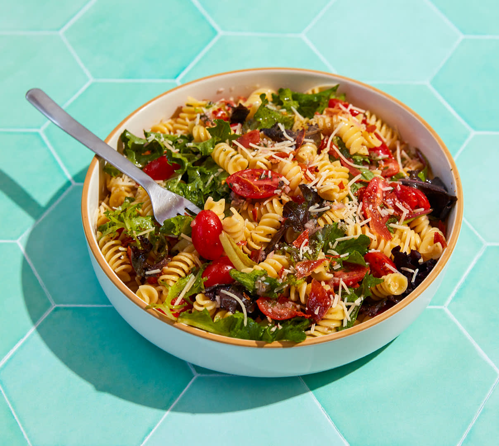

Perfect Pasta Primavera
Pasta Primavera is a fresh and colorful dish that features seasonal vegetables, tossed in a light and healthy sauce. It's the perfect meal for a quick and easy dinner that still feels gourmet.
Ingredients include:
- Spaghetti or other pasta
- Seasonal vegetables (e.g., zucchini, bell peppers, tomatoes)
- Garlic, olive oil, Parmesan cheese
- Fresh herbs like basil and parsley
Directions: Cook the pasta until al dente, sauté the vegetables, mix everything together with olive oil and garlic, and top with Parmesan cheese and fresh herbs. Enjoy!